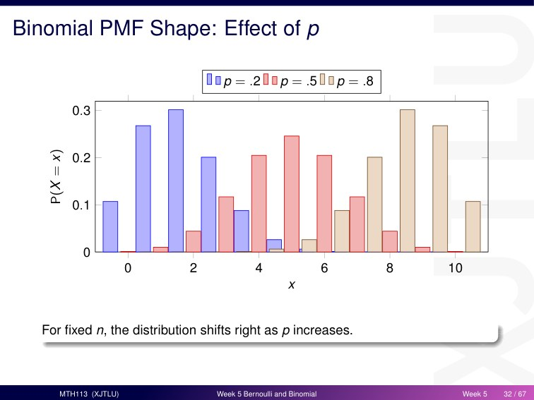
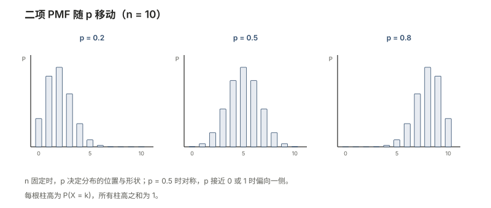

MTH113 · 第 5 章
Bernoulli 与二项分布
Bernoulli & Binomial Distributions
虚线下划线为术语；悬停查看中文、英文与释义，完整词典见“术语”。
本章目录
本讲把第 3 周的通用 PMF 工具落到第一族命名离散模型：先用 Bernoulli 描述一次成功—失败试验，再用二项分布描述固定 n 次独立试验中的成功次数，并掌握其 PMF、均值、方差与适用条件。
本章要点
- “成功”只是被计数的那个事件的标签，不一定是好事；写 p 之前必须先定义成功。
- Bernoulli 随机变量取 0/1，P(X = x) = px(1−p)1−x，E(X) = p，Var(X) = p(1−p)。
- Bernoulli 方差在 p = 0.5 时最大，等于 0.25。
- 二项分布需要四个条件：固定 n、每次两种结果、试验独立、成功概率 p 恒定。
- 二项 PMF 的组合数来自“哪些位置成功”，px(1−p)n−x 来自“每条序列的概率”。
- E(X) = np，Var(X) = np(1−p)；均值不一定是可能取值。
- “至少一个”用补集 1 − (1−p)n；上尾用 1 − F(k−1)，边界不能错。
- 不放回抽样只在样本相对总体很小（约 n/N ≤ 0.10）时才可近似为二项。
5.1 为什么需要命名离散模型
通用 PMF 表很灵活，但不揭示结构。讲义指出命名模型named model的四个好处：用少量参数描述重复模式；不必列出每个结果就能算概率；把应用假设与公式连接起来；给出可解释的均值与方差。
本讲的贯穿例子：工厂生产大批小零件，历史数据显示某零件为次品的概率 p = 0.08。检查一个零件，关心是否为次品；检查 12 个零件，关心其中有多少个次品；需要计算没有次品、至多一个次品、至少三个次品的概率。这个情境自然地从 Bernoulli 过渡到二项分布。
讲义特别澄清“成功/失败”只是标签。成功success指被计数的那个事件，不一定是好事。质量检验中“成功”可以是“发现次品”；医学筛查中可以是“检测阳性”；调查中可以是“支持某政策”；服务系统中可以是“有来电”。建模前必须先说清成功指什么，否则 p 没有意义。
W5 p.6–8
5.2 Bernoulli 试验与 Bernoulli 随机变量
Bernoulli 试验Bernoulli trial是恰有两个可能结果的随机试验：成功 S 与失败 F。令 p = P(S)，1 − p = P(F)，其中 0 ≤ p ≤ 1。例：一件产品次品或合格；一位顾客购买或不购买；一条消息是垃圾邮件或不是；一位选民支持或不支持某政策。
定义随机变量
则 X 是参数为 p 的 Bernoulli 随机变量Bernoulli random variable，记 X ~ Bern(p)。其 PMF 为
逐项写开就是 P(X = 0) = 1 − p，P(X = 1) = p，两者之和为 1。Bernoulli 随机变量本质上是“某事件是否发生”的指示器。
例：检查一件产品，X = 1 表示次品，p = 0.08。则 P(X = 1) = 0.08，P(X = 0) = 0.92，PMF 为 P(X = x) = 0.08x(0.92)1−x。
参数范围 0 ≤ p ≤ 1 必须满足；若 p 超出这个范围，它就不是概率。这个检查看似 trivial，却是建模时最容易忽略的一步。
W5 p.9–12
5.3 Bernoulli 的期望、方差与最大值位置
用通用期望公式：
解释：重复很多次后，0/1 结果的平均值接近成功概率。若 p = 0.08，长期平均“次品指示值”为 0.08。
先算 E(X2) = 02(1−p) + 12p = p，再得
方差作为 p 的函数是 p − p2，导数 1 − 2p，令其为 0 得 p = 0.5。此时 Var = 0.25，是最大值。成功与失败各半时结果最难预测；p 接近 0 或 1 时结果几乎确定，方差接近 0。
例：X ~ Bern(0.35)，则 E(X) = 0.35，Var(X) = 0.35 × 0.65 = 0.2275。因为 0.2275 < 0.25，所以它的方差小于 p = 0.5 时的最大值。
Bernoulli 随机变量也叫指示变量indicator variable。对事件 A，IA = 1（A 发生）、0（不发生），则 E(IA) = P(A)。指示变量的威力在于：计数可以写成指示变量之和。
Clean vector plot of the Bernoulli variance p(1-p) against p from 0 to 1, a downward-opening parabola peaking at p = 0.5 with value 0.25, with dashed guides to the peak. Axes labelled p and p(1-p). Flat 2D, thin 1.5 px strokes, muted slate blue and warm grey palette, white background, English labels only, no cartoon, no gradient, no shadow.
W5 p.13–17
5.4 从 Bernoulli 到二项分布：四个条件
检查 n 件产品，令 Ii = 1 表示第 i 件为次品、0 表示合格，则次品总数
若各 Ii 是独立同分布的 Bern(p)，则 X 服从二项分布binomial distribution，记 X ~ Bin(n, p)。
讲义给出四个条件：
- 试验次数 n 固定。
- 每次试验只有两种结果：成功或失败。
- 各次试验相互独立。
- 每次试验的成功概率 p 相同。
X 表示 n 次试验中的成功次数，取值范围 x = 0, 1, 2, …, n。若 n = 12，则 X ∈ {0, 1, …, 12}；12.5 或 13 不可能出现。
| 情境 | 是否二项 | 理由 |
|---|---|---|
| 12 件独立检查、次品率相同，数其中次品数 | 是 | 固定 n、两种结果、p 恒定 |
| 询问顾客直到第一次购买，记录询问人数 | 否 | 试验次数不固定 |
| 一小时内到达的来电数 | 否 | 不是固定次数的试验 |
| 抛 20 次公平硬币，数正面数 | 是 | 经典二项情境 |
讲义练习还给出两个边界案例：从 52 张牌中不放回抽 5 张数 A 的数量，严格说不是二项，因为不放回使各次不独立；“一直询问到第一位购买者”不是二项，因为 n 不固定，属于几何型问题。
W5 p.18–23、41–42
5.5 二项 PMF 的推导
先看一条具体序列。设 n = 5，要求恰好 2 次成功。序列 SFSFF 的概率由独立性相乘：
任何恰含 2 次成功、3 次失败的序列都有相同概率 p2(1−p)3，因为乘法可交换。差别只在“成功出现在哪些位置”。
长度为 n 的序列中恰有 x 个成功的选法数为
于是
组合数负责“哪些位置成功”，幂次负责“每条序列的概率”。漏掉组合数是二项计算最常见的错误。
为什么 PMF 总和为 1：由二项式定理
令 a = p、b = 1 − p，则总和为 (p + 1 − p)n = 1。二项 PMF 因此是合法分布。
W5 p.24–26
5.6 二项概率的直接计算
缺陷元件例：X = 12 件独立检查中的次品数，p = 0.08，X ~ Bin(12, 0.08)。恰有 3 件次品：
约 5.32% 的样本会恰有 3 件次品。
没有次品：
至少一个次品用补集：P(X ≥ 1) = 1 − 0.3677 = 0.6323。
至多一个次品：P(X ≤ 1) = P(X=0) + P(X=1) ≈ 0.3677 + 0.3836 = 0.7513。约 75.13% 的样本至多一件次品。
调查例：20 名学生独立地以 0.15 的概率支持某政策，X ~ Bin(20, 0.15)。E(X) = 3，SD(X) = √[20(0.15)(0.85)] ≈ 1.597，P(X = 3) = C(20,3)(0.15)3(0.85)17 ≈ 0.2428。
CDF 写法：F(k) = P(X ≤ k) = Σx=0k C(n,x)px(1−p)n−x。于是 P(X ≤ 2) = F(2)；P(X > 2) = 1 − F(2)；P(3 ≤ X ≤ 6) = F(6) − F(2)。
W5 p.27–31、37–38
5.7 CDF、补集与手算策略
二项概率的手算策略按题目形状分三类：单个精确值用 PMF；小范围累积用逐项求和；大范围尾部用补集 P(X ≥ k) = 1 − P(X ≤ k−1)。原则是让求和的项数尽量少。
调查例中 P(X ≤ 2) ≈ 0.4049，P(X ≥ 4) = 1 − P(X ≤ 3) ≈ 0.3523。后者的补集只有 0、1、2、3 四项；若直接算 4 到 20 共 17 项，既慢又容易错。
软件命令只作为核对工具：R 中 dbinom(x, size=n, prob=p) 给 P(X=x)，pbinom(k, size=n, prob=p) 给 P(X≤k)；Excel 中 =BINOM.DIST(x,n,p,FALSE) 与 =BINOM.DIST(k,n,p,TRUE) 分别对应精确值与累积值。考试仍要求会写公式与判断边界。
边界检查的固定动作：把“至少/至多/超过/少于”逐一翻译成 ≥、≤、>、<，再决定补集退到哪一个整数。二项取值是整数，任何 0.5 的修正都不需要，但 k−1 的退位必须做。
W5 p.31、38–40
5.8 二项分布的形状、均值与方差
固定 n 时，p 增大使分布整体右移。若 p = 0.5，分布对称；p < 0.5 右偏；p > 0.5 左偏。当 n 变大且 p 不接近 0 或 1 时，形状逐渐接近钟形。偏态描述的是计数 X 的分布，不是“成功”这个标签本身。
把 X 写成 n 个独立 Bernoulli 指示变量之和：X = I1 + … + In。由期望线性性，
由独立性，方差可加：
例 X ~ Bin(12, 0.08)：E(X) = 0.96，Var = 12(0.08)(0.92) = 0.8832，SD ≈ 0.9398。
两个模型可以同均值而不同离散程度：X ~ Bin(20, 0.15) 与 Y ~ Bin(50, 0.06) 的均值都为 3，但标准差分别约 1.60 与 1.68。均值相同不代表分布相同。


绘图提示词
Clean vector plot of three binomial probability histograms on the same axes for n = 10 and p = 0.2, 0.5, 0.8, drawn as thin outlined bars in three muted tones, showing the distribution shifting right as p increases. Axes labelled x and P(X = x), legend p = 0.2, p = 0.5, p = 0.8. Flat 2D, thin strokes, muted slate blue, warm grey and sand palette, white background, no cartoon, no gradient, no shadow.
W5 p.32–36、50
5.9 模型检验：不放回抽样与 10% 规则
二项模型要求独立与恒定 p。不放回抽样会使各次结果不独立：抽走一件次品后，剩余批次中的次品比例改变。若样本相对总体很小，这种依赖很弱，可用二项近似。
讲义的经验规则：若 n/N ≤ 0.10，二项近似在入门课程中通常可接受。从 10,000 名顾客中抽 25 人，近似独立；从 50 人中抽 25 人，则不行。
验收抽样例：供应商每箱 40 件，次品率 0.12 且独立，X ~ Bin(40, 0.12)。恰有 5 件次品的概率 P(X=5) = C(40,5)(0.12)5(0.88)35 ≈ 0.1867。
设计问题：每件次品率 p = 0.03，检查 n 件，至少发现一件次品的概率为 1 − (1−p)n。若 n = 10，则 1 − 0.9710 ≈ 0.2626。要让该概率至少 95%，解
故需检查 99 件。即使缺陷很罕见，检查足够多的件数后，“至少发现一件”的概率也会接近 1。这是“缺陷发现曲线” 1 − 0.97n 的含义。
W5 p.43–46、59
5.10 解释 np、众数与模型比较
np 是许多次重复下的平均值，不一定是一个可能的精确值。X ~ Bin(12, 0.08) 时 E(X) = 0.96，但不能说“会有 0.96 件次品”，因为计数必须是整数。正确说法是“每样本长期平均次品数为 0.96”。
最可能的值叫众数。对许多二项分布，众数在 (n+1)p 附近。例 X ~ Bin(20, 0.15)：(n+1)p = 21(0.15) = 3.15，众数接近 3，且 P(X=3) ≈ 0.2428。均值、中位数与众数相关但不相同。
风险解释例：公司寄出 20 张发票，每张独立地以 0.15 的概率延迟付款，X ~ Bin(20, 0.15)。至少 4 张延迟的概率 P(X ≥ 4) = 1 − P(X ≤ 3) ≈ 0.3523。虽然期望只有 3 张，35% 的尾部风险在运营上仍可能很重要。
比较两个二项模型时，不能只看均值。Bin(20, 0.15) 与 Bin(50, 0.06) 的均值都是 3，但后者试验次数更多、单次成功更罕见，标准差略大，尾部形状也不同。
W5 p.47–51
5.11 递推、分位数与测验案例
相邻二项概率满足递推：
因此 P(X=x+1) = P(X=x) × 该比值。它避免反复计算阶乘。例 X ~ Bin(5, 0.30)，P(X=0) = 0.75 = 0.16807，后续为 0.360、0.309、0.132、0.028、0.002，四舍五入后总和约 1。
递推还给出众数规则：只要比值大于 1，PMF 就上升；由此二项众数通常是 ⌊(n+1)p⌋。若 (n+1)p 是整数，则有两个相邻众数。
离散分位数定义为使 P(X ≤ k) ≥ q 的最小整数 k。因为 X 离散，通常不能恰好取到 P(X≤k) = q。
把计数转成 z 分数可判断“异常计数”：X ~ Bin(30, 0.20) 时 μ = 6、σ = √4.8 ≈ 2.19，观察到 12 次的 z ≈ (12−6)/2.19 ≈ 2.74，距均值约 2.74 个标准差。这个思路连接后面的正态近似与假设检验。
综合案例：30 道独立选择题，纯猜时每题正确率 0.20，X ~ Bin(30, 0.20)。E(X) = 6，Var = 4.8，SD ≈ 2.19。至少答对 10 题的概率为 P(X ≥ 10) = 1 − P(X ≤ 9) ≈ 0.0611。纯猜得到 10 题以上并非不可能，但相对不常见。
W5 p.53–63
5.12 常见错误与二项建模清单
讲义列出五类计算错误：漏掉组合数 C(n,x)；把指数写成 pn−x(1−p)x；把“至少”当成“恰好”；取补集时忘记边界退一；在试验不独立或 p 变化时仍用二项。
建模前先过一张清单：一次试验是什么？成功是什么？n 是多少？为什么独立？为什么 p 恒定？题目问的是哪个事件？这六问能挡住大部分错误。
| 维度 | Bernoulli | 二项 |
|---|---|---|
| 随机变量 | 一次试验的 0/1 结果 | n 次试验中的成功次数 |
| 参数 | p | n, p |
| 取值 | 0, 1 | 0, 1, …, n |
| PMF | px(1−p)1−x | C(n,x)px(1−p)n−x |
| 均值 | p | np |
| 方差 | p(1−p) | np(1−p) |
W5 p.52、60、64